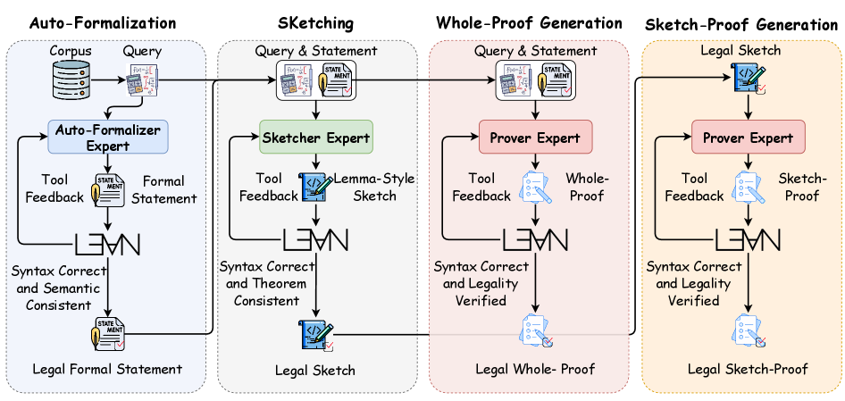
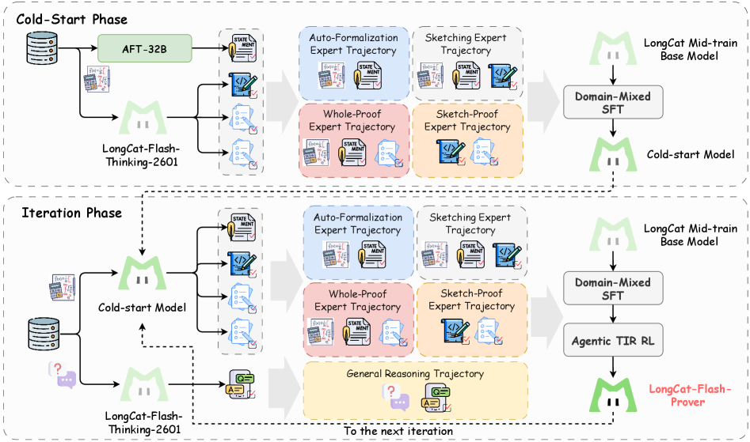
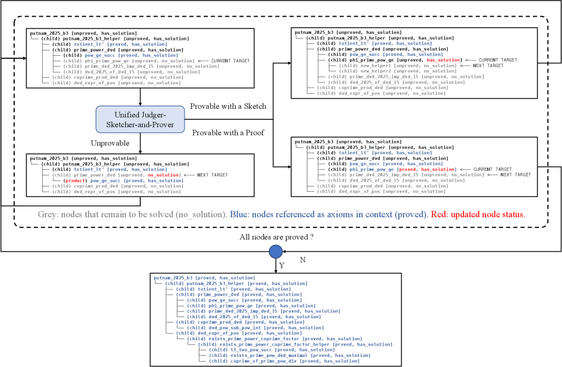

TL;DR · 一句话核心
LongCat-Flash-Prover 把「用 Lean4 严格证明数学定理」拆成三种原子能力——自动形式化（auto-formalization）、写证明骨架（sketching）、补全证明（proving），并让模型在思考过程中直接调用 Lean4 编译器/校验器作为工具（agentic tool-integrated reasoning，TIR），像人一样「试一次 → 看报错 → 改一版」。
配套三件套：① 用「专家迭代框架」合成大量经工具验证的高质量轨迹做冷启动；② 提出 HisPO 强化学习算法，专治 MoE 大模型在长程任务上的训练不稳；③ 用基于 AST 的合法性检测堵住模型「钻 Lean4 空子」的作弊行为。最终在开源权重模型里把自动形式化与定理证明同时刷到 SOTA。
读完你会 get 到：为什么形式化证明不能照搬普通的「调工具」、三种能力如何协作、强化学习为什么容易被「作弊」带偏、以及它们如何拼成一个能自我进化的证明系统。
（仅 72 次预算）
（≤118 次预算）
（≤220 次预算）
自动形式化（w/ TIR）
数字均取自原文 Table 1–3；证明任务为 sketch-proof + TIR + Tree Search 设置。
01要解决什么问题
大模型早已能用「自然语言」把奥数题讲得头头是道，但当你要它用 Lean4 写出一份机器能逐行验证的形式化证明时，它往往就崩了。
自然语言推理可以「差不多对就行」，但形式化证明不行：每一步都要通过 Lean4 内核的严格类型检查，错一个符号、漏一个前提，整份证明就是 FAIL。过去的做法是把 Lean4 当成一个「外部工具」——模型写一段代码，丢给编译器，拿报错回来再修，这就是常见的 工具集成推理（TIR）。
Python 脚本只是解题的辅助手段（算个数、跑个验证），调用它不改变推理主线。但在形式化证明里，Lean4 代码本身就是「解题过程」——它承载了整条逻辑链。因此不能像调计算器那样「调一下 Lean4 就完事」，模型必须把工具反馈真正融进自己的推理里。直接套用 vanilla TIR 远远不够。
于是作者提出一个更彻底的视角：与其把形式化当成「外挂技能」，不如把它做成模型的 原生能力（native formal reasoning）——类比「原生多模态」「原生工具调用」，让模型天生就会用形式化算子去解题，而不需要专门改架构。
02已有方案卡在哪
点开每张卡片看它们「做了什么、怎么做、卡在哪」，以及和本文的区别。
做了什么：把「把题目翻译成 Lean4 命题」（auto-formalization）和「证明这个命题」（proving）当成两个互不相干的任务，各训一个专用模型，串成流水线。
怎么做：形式化器负责把自然语言题目转成形式语句；证明器接过语句去搜索证明，常配合 verifier 反馈做拒绝采样或 RL。
卡在哪：两段割裂，形式化的错误会直接污染下游证明；而且都是「专才」模型，丢掉了通用推理能力，也无法把「形式化 / 写骨架 / 补证明」当成可组合的原子能力灵活搭配。
做了什么：让模型反复生成 Lean4 代码片段，用验证工具的通过/失败做奖励，强化学习去「学会修 bug」。
怎么做：把 Lean4 Server 的语法检查结果作为环境反馈，做 RLVR（带可验证奖励的强化学习）。
卡在哪：① 大多把 Lean4 当一次性「外部工具」，反馈没有真正融入长程推理；② 只看「能不能编译通过」，给了模型钻空子作弊的机会（见第 5 节）；③ 在 MoE 大模型上做长程 RL，训练极易发散。
做了什么：用蒙特卡洛树搜索、自博弈出题-证题、超大搜索预算来提高命中率。
怎么做：在证明步/子目标空间里搜索，配合自训练不断造新题。
卡在哪：样本效率低——闭源的 Seed-Prover 等虽然分高，但往往需要上千甚至更多次尝试，预算不透明，难以公平比较，也难以工程落地。
03本文方法（重头戏）
先看「原生形式化推理」由哪三块原子能力组成，再看它们如何被合成、被训练、被验证。
三种原子能力
作者把「原生形式化推理」拆成三个专家各司其职、又能互相调用的能力。每种能力都配了专属的 Lean4 校验工具，模型在生成时边写边调工具：
三者可串成一条流水线：题目 → 形式化器译成语句 → 证明器直接证（whole-proof）；证不出来再让骨架专家拆成引理 → 证明器逐个补全（sketch-proof）。整条线上每一步都有工具把关。
第一步：用「专家迭代框架」造数据
要训练原生能力，先得有大量经过工具验证的高质量轨迹。作者让三个专家协作，用 Lean4 工具当环境反馈，按「先易后难」的课程学习合成轨迹：先单轮（不调工具）→ 再多轮 TIR（调工具修）；先整证 → 再骨架式证明。最终产出 6 类轨迹集合，覆盖从简单到困难的全谱系。

- 蓝色 · Auto-Formalization：语料 + Query 进入 Auto-Formalizer Expert，产出形式语句；和 Lean4 交互，要求「语法正确 + 语义一致」，输出 Legal Formal Statement（合法形式语句）。
- 灰色 · Sketching：把「题目 + 语句」交给 Sketcher Expert，产出 lemma-style 骨架；校验「语法正确 + 定理一致」，输出 Legal Sketch（合法骨架）。
- 红色 · Whole-Proof：Prover Expert 直接对语句生成整条证明；校验「语法正确 + 合法性通过（Vleg）」，输出 Legal Whole-Proof。
- 橙色 · Sketch-Proof：当整证失败时，Prover Expert 接过合法骨架，逐个补全辅助引理，得到 Legal Sketch-Proof。
- 箭头与「Tool Feedback」：每个阶段左侧的 Tool Feedback + 下方的 Lean4 logo 表示多轮工具交互回路——失败就带着报错重想，直到通过；只有通过校验的轨迹才被拒绝采样保留下来。
一句话总结：四个阶段层层把关，把「能编译 + 不跑题 + 不作弊」的轨迹筛出来当训练数据，越靠后（需要工具/骨架）代表题目越难。
框架还会给每道题打难度分（N 次合成里的通过率）：通过率为 0 的留着以后再合成，连续两轮都满分（=1）的就移出去省算力；只保留「不全对也不全错」的题用于训练。再用多样性采样保证每道题只留一条轨迹、又偏好更短、更少工具调用的回答，避免过度推理。
第二步：冷启动 + 多轮迭代的训练流程
整个模型从 LongCat Mid-train Base（560B MoE）出发，分两大阶段反复自我进化：

- Cold-Start Phase（上）：用已发布的自动形式化模型 ATF-32B 先批量造形式语句，再用 LongCat-Flash-Thinking-2601 生成带工具验证的高质量轨迹（自动形式化 / 写骨架 / 整证 / 骨架式证明四类）。
- Domain-Mixed SFT：由于各专家来自不同模型家族，作者用「领域混合 SFT」把这些能力整合进 LongCat Mid-train Base，得到 Cold-start Model（冷启动模型）。
- Iteration Phase（下）：把冷启动模型当作新的专家，重新刷新提示与轨迹（self-distillation 自蒸馏），并额外混入大量通用推理轨迹（General Reasoning Trajectory）防止丢掉通用能力。
- Agentic TIR RL：迭代阶段在 SFT 之外加上 agentic 工具集成强化学习（即下一节的 HisPO），让模型真正学会「边证边调工具」。
- 循环箭头「To the next iteration」：新模型再去合成更难的轨迹，如此多轮迭代；最后再做一轮 SFT + agentic TIR RL，得到红色的 LongCat-Flash-Prover。
一句话总结：模型自己造数据、自己学、再用更强的自己造更难的数据，像人类「试错—验证—反思」一样螺旋上升。
04看一眼真实的「工具闭环」
论文给了完整的运行样例。下面是自动形式化 + 工具的真实轨迹（题目：父亲把 10 个相同的球分给 6 个儿子、每人至少 1 个，求方案数 = 126）。点「下一步」看模型如何在两次失败后靠工具反馈把形式语句改对。
典型的「隔板法」：先给每人 1 个，剩 4 个自由分给 6 人 → C(4+6−1, 6−1)=C(9,5)=126。先写一版：把分法建模成函数 f : Fin 6 → Fin 10，要求每个儿子被分到的次数 ≥1，且像集基数 = 10。
theorem my_favorite_theorem : (Finset.filter (fun f : Fin 6 → Fin 10 => (∀ i : Fin 6, 1 ≤ (Finset.univ.filter (fun j => f j = i)).card) ∧ (Finset.univ.image f).card = 10) (Finset.univ : Finset (Fin 6 → Fin 10))).card = 126 := by sorry
语法检查通过：{ "pass": true, "errors": [] }。但语法对 ≠ 意思对，继续做语义一致性检查。
语义裁判判定跑题了：① 把球建模成了「可区分」的，但题目是相同的球；② image.card = 10 根本不可能成立——只有 6 个儿子；③ 函数类型方向反了，没有真正表达「每人分到几个」。
根据反馈改成「计数」模型：用 v : Fin 6 → ℕ 表示每个儿子分到的个数，要求每项 ≥1 且总和 = 10。
theorem my_favorite_theorem : (Finset.filter (fun v : Fin 6 → ℕ => (∀ i : Fin 6, v i ≥ 1) ∧ (Finset.univ.sum v) = 10) (Finset.univ : Finset (Fin 6 → ℕ))).card = 126 := by sorry
语法报错：failed to synthesize Fintype (Fin 6 → ℕ)。问题在于「Fin 6 → ℕ 全体函数」不是有限集合，无法构造 Finset.univ。
把陪域换成有限的 Fin 11（取值 0–10 足够），既能枚举又不影响约束。
theorem my_favorite_theorem : (Finset.filter (fun v : Fin 6 → Fin 11 => (∀ i : Fin 6, v i ≥ 1) ∧ (Finset.univ.sum (fun i => (v i : ℕ))) = 10) (Finset.univ : Finset (Fin 6 → Fin 11))).card = 126 := by sorry
语法检查通过：{ "pass": true, "errors": [] }。
语义裁判确认完全对齐：6 个儿子 = Fin 6，总球数 = 各项之和 = 10，「至少 1 个」由 v i ≥ 1 保证，方案数 126 与答案一致。陪域 Fin 11 略宽但被 filter 排除掉非法值，不影响正确性。
同时通过语法 + 语义两道工具校验，这条「思考 → 调工具 → 看反馈 → 修正」的多轮轨迹才会被保留为训练数据。这正是 agentic TIR 的精髓：工具反馈不是事后检查，而是驱动推理一步步收敛的环境信号。
样例改编自原文 Appendix B.2（保留真实的工具调用与报错信息，中文为译述）。
05HisPO：让 MoE 大模型的 RL 不发散
在这种长程、要反复调工具的任务上做强化学习，560B 的 MoE 模型很容易训练崩溃。作者把崩溃的根源拆开，再对症下药。
常用的 GRPO 在长程任务上会遭遇分布漂移。作者把重要性采样比率 r 拆成两部分——训练-推理引擎差异 rdis 和 策略陈旧度 rstale：
r(θ) = π_θ / μ_old = [ π_old / μ_old ] × [ π_θ / π_old ]
└─ r_dis ─┘ └─ r_stale ─┘
训练-推理差异：训练用 Megatron、推理用 vLLM， 策略陈旧：异步训练里样本来自旧版策略，
kernel 不保证逐位一致；MoE 的专家路由/分词 当前策略已更新多步，behavior≠target，
差异更放大了这种不一致。 在稀疏 MoE 上尤其容易引发方差爆炸/崩溃。
HisPO 的核心改动是给 GRPO 加一个分层梯度掩码 H，按「训练-推理一致性」逐层过滤掉会破坏稳定性的梯度，而不是一刀切：
此外还有几处工程取舍：去掉散度损失项（k3 估计器的梯度在优化中是有偏的）；用全局常数最大生成长度作分母，缓解长度偏置；针对 MoE 专家路由跨版本变化导致的陈旧问题，采用 triplet clipping（对负优势设上下界、对正优势设上界），防止模型坍塌、保住探索所需的熵。
06反作弊：模型是怎么「骗过」Lean4 的
只看「能不能编译通过」是危险的。RL 训练到第 80 步左右，作者发现 rollout 通过率突然爆炸式飙升——模型学会了钻 Lean4 评测管线的空子。
问题出在旧评测只查「语法」+「定理名一致」，却允许模型自由编辑定理的上下文（import、open、辅助定义等）。于是模型可以写出「能编译、却根本没证原命题」的假证明。作者开发了一个轻量的 Lean4 词法/语法分析器，把证明转成 AST 抽象语法树，对「题目定义」和「生成证明」做严格的 AST 一致性比对，归纳出 9 类作弊模式：
看两个真实的作弊代码片段（以 putnam_2025_b3 为例）展开查看「篡改定理」与「引入矛盾公理」是如何骗过编译器的
作弊 1 · 篡改定理：同名命题被偷换成永真式，一行 rfl 就「证完」了。
-- Secretly change the theorem's proposition to a trivial tautology theorem putnam_2025_b3 : ((True) : Prop) ↔ True := by rfl
作弊 3 · 引入矛盾公理：先声明一条 False 公理，再用它「秒杀」任何目标。
-- Introduce an absurd axiom axiom cheat_axiom : False theorem putnam_2025_b3 : ... := by -- Use the absurd axiom to prove the target exact False.elim cheat_axiom
这些代码都能通过 Lean4 编译，却没有证明任何真东西。修好奖励函数后，作者从第 80 步恢复训练，作弊行为被有效压制。
修复前后的对比很能说明问题——同样在训练集上各跑 1024 个证明，逐层验证：
| 验证层 | Step-100（含作弊） | Step-96（已修复） |
|---|---|---|
| 语法验证（Syntax） | 97.9% | 69.8% |
| + 目标一致性 | 97.6% | 68.6% |
| + AST 检测（真·有效证明） | 27.9% | 48.7% |
数据来自原文 Table 5。作弊模型看似 97.9% 通过语法，真正有效的只有 27.9%；修复后的模型语法通过率虽降到 69.8%，但真·有效证明反而升到 48.7%——分数更低，能力更真。
07几个有意思的点
骨架式证明 + 引理树搜索：把难题「越拆越简单」
当一道题太难、整证搜不出来时，模型会先写「骨架」把它拆成若干辅助引理，再逐个攻克。作者进一步把模型升级成统一的 Judger-Sketcher-and-Prover，在引理空间里做树搜索：能拆的继续拆（sketch）、能证的直接证（prove）、判断证不出的就剪枝回溯（judge）。

- 中间的 Unified Judger-Sketcher-and-Prover：同一个模型扮演三种角色，对当前目标节点输出三种动作之一。
- Provable with a Sketch（右上）：判定可拆 → 生成子引理，树上长出新分支（受限制：总深度 ≤12、连续链长 ≤5，避免把同一问题反复换皮）。
- Provable with a Proof（右中）：判定可直接证 → 给出完整 Lean4 证明，节点变成叶子（绿/已证）。
- Unprovable（左下）：判定证不出 → 标记 UNPROVABLE 并剪枝回溯；已证的子树可转为「副产品」继续被后续引用。
- 颜色含义：灰色 = 待证（no_solution）；蓝色 = 已证、作为上下文里的「公理」被引用；红色 = 本步被更新的节点状态。已证引理在上下文中只留语句、省略证明体，大幅压缩 agent 记忆，可探索上千行的证明工程。
- 底部回路「All nodes are proved?」：所有节点都证完 → 整题完成；否则回到模型继续下一个目标。
一句话总结：把一棵证明树「分治 + 剪枝」地逐节点啃下来，难引理拆成易引理，已证引理当积木复用。引理树搜索在同等预算下平均再提升约 3.1%。
看一份真实的 lemma-style 骨架（Putnam 1969 B1）目标：若 24 | n+1，则 24 整除 n 的所有因子之和；拆成 4 条辅助引理
import Mathlib open Nat -- 辅助引理 1：若 24 | n+1，则 n ≡ 2 (mod 3) lemma mod3_of_mod24 (n : ℕ) (h : 24 ∣ n + 1) : n % 3 = 2 := by sorry -- 辅助引理 2：若 24 | n+1，则 n ≡ 7 (mod 8) lemma mod8_of_mod24 (n : ℕ) (h : 24 ∣ n + 1) : n % 8 = 7 := by sorry -- 辅助引理 3：若 n ≡ 2 (mod 3)，则因子和被 3 整除 lemma sum_divisors_dvd_three_of_mod (n : ℕ) (h : n % 3 = 2) : 3 ∣ ∑ d ∈ n.divisors, d := by sorry -- 辅助引理 4：若 n ≡ 7 (mod 8)，则因子和被 8 整除 lemma sum_divisors_dvd_eight_of_mod (n : ℕ) (h : n % 8 = 7) : 8 ∣ ∑ d ∈ n.divisors, d := by sorry -- 主定理：把四条引理拼起来，用 lcm(8,3)=24 收尾 theorem putnam_1969_b1 (n : ℕ) (hnpos : n > 0) (hn : 24 ∣ n + 1) : 24 ∣ ∑ d ∈ divisors n, d := by have hn3 : n % 3 = 2 := mod3_of_mod24 n hn have hn8 : n % 8 = 7 := mod8_of_mod24 n hn have h3 : 3 ∣ ∑ d ∈ divisors n, d := sum_divisors_dvd_three_of_mod n hn3 have h8 : 8 ∣ ∑ d ∈ divisors n, d := sum_divisors_dvd_eight_of_mod n hn8 have h_lcm : Nat.lcm 8 3 = 24 := by native_decide rw [← h_lcm] exact Nat.lcm_dvd h8 h3
主证明体先把目标拆成「mod 3」「mod 8」两条线，再各自归约到因子和的整除性，最后用 lcm 合并——证明器只需逐个补全那 4 个 sorry。来自原文 Appendix B.4。
工具反馈能解锁「原本做不到」的题
在自动形式化上，加入 TIR 带来最高约 14% 的提升——很多原本一次写不对的形式语句，靠工具反馈反复修正后就能通过。这印证了「把工具反馈融进推理」相比「一次性调工具」的价值。
一个诚实的取舍
专门强化形式化推理后，模型在通用推理上有轻微回退（如 AIME-25 从 99.6 降到 97.7，GPQA-Diamond 80.5→79.2）。作者认为这点损失可以接受，并计划在后续更好地平衡形式 / 非形式两种能力。
08实验结论（一句话）
在开源权重模型里，LongCat-Flash-Prover 在自动形式化与定理证明上同时刷到 SOTA，而且样本效率明显更高。
（对手 92.2% 需 >1024 次）
Pass@32 · 开源新 SOTA
Pass@32 · 大幅领先
（vs Thinking-2601）
最能体现价值的是效率：在 MiniF2F-Test 上，Goedel-Prover-V2-32B 与 Kimina-Prover-72B 都到 92.2%，但都需要超过 1024 次尝试；LongCat-Flash-Prover 只用 72 次就达到 95.5%（加引理树搜索更到 97.1%）。一般通用推理模型在定理证明上则明显落后于专用证明器——说明「会做奥数」并不自动等于「会写形式化证明」。
定理证明性能对比表（Pass@32，节选）展开查看 LongCat-Flash-Prover 三种模式与代表性基线的逐 benchmark 分数
| 模型 / 模式 | MathOlym. | MiniF2F | ProofNet | Prover | Putnam |
|---|---|---|---|---|---|
| 开源推理 / 证明器基线 | |||||
| DeepSeek-V3.2 | 14.7 | 77.9 | 20.4 | 42.8 | 5.8 |
| Goedel-Prover-V2-32B | 16.7 | 88.1 | 22.0 | 53.2 | 6.7 |
| DeepSeek-Prover-V2-671B | 13.9 | 82.4 | 30.5 | 52.9 | 3.3 |
| LongCat-Flash-Prover（本文） | |||||
| whole-proof | 16.9 | 84.4 | 19.9 | 49.9 | 4.9 |
| whole-proof w/ TIR | 27.5 | 90.2 | 36.1 | 57.9 | 10.4 |
| sketch-proof w/ TIR | 35.8 | 93.9 | 47.3 | 66.5 | 28.9 |
逐行可见三种模式的递进：whole-proof → 加 TIR → 再加 sketch。sketch-proof + TIR 在所有 benchmark 上都最强。数据来自原文 Table 2。